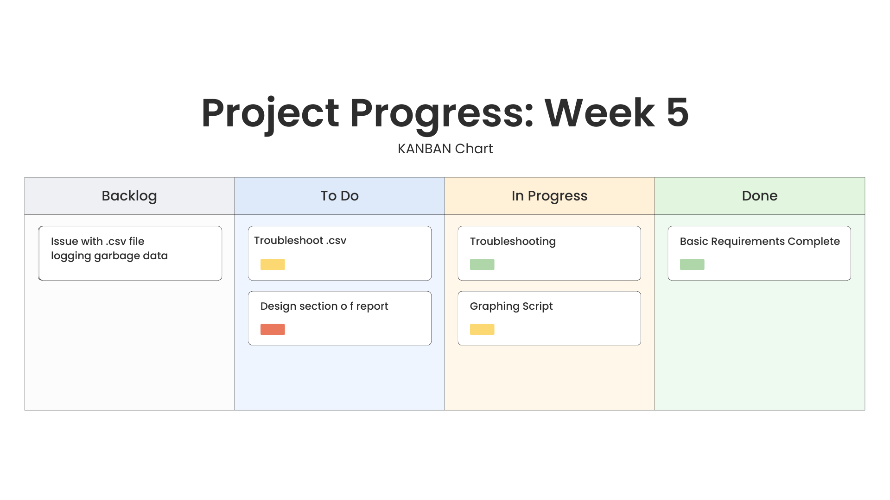
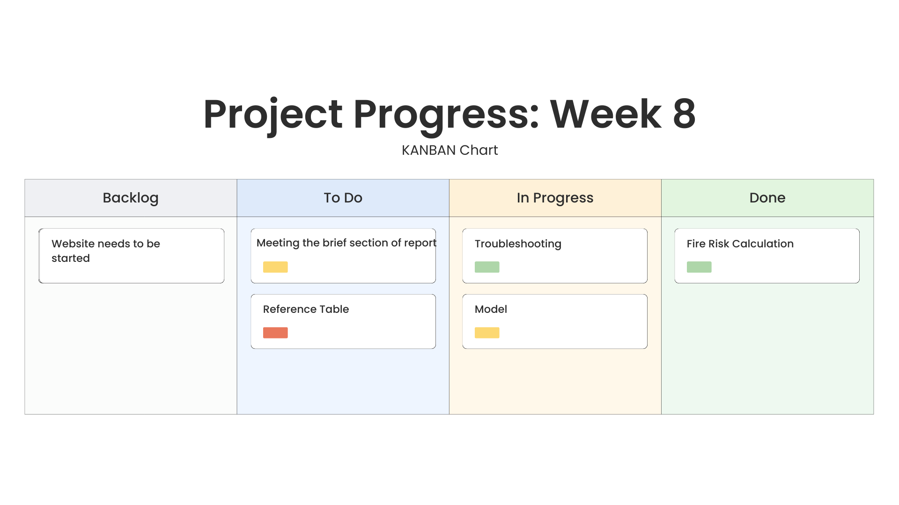
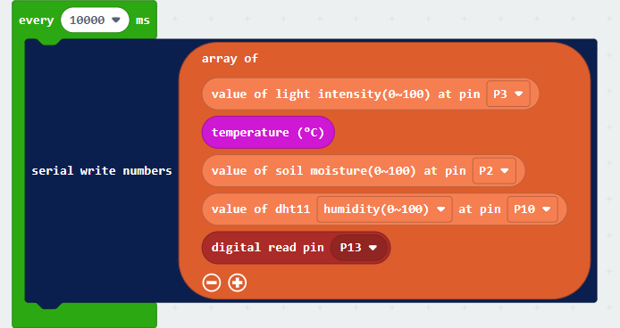
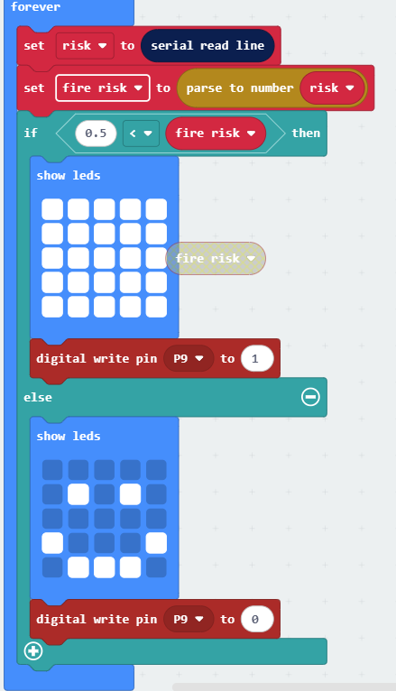
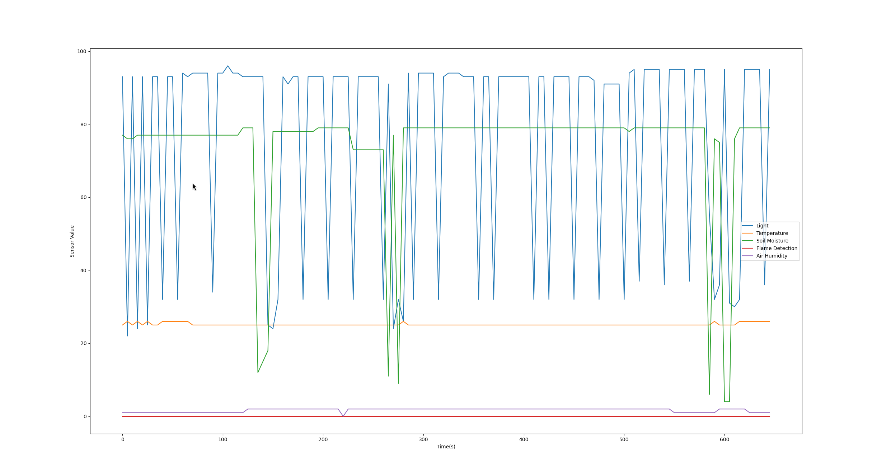

Progress Log
4.1 Describe the key milestones of the development process.
| Week 1 |
Started the project. Began investigating the brief and making sure my project meets each requirement. Created a Google doc with all the information and began writing my report. |
|---|---|
| Week 2 |
Ordered necessary sensors and other components for my project. Learnt how to extract data from a .csv file and wrote code to be used later. |
| Week 3 |
Continued to expand on the Google doc and finished the investigation section. Built my greenhouse using Elecfreaks kit, connected all sensors to micro:bit. |
| Week 4 |
Finalised micro:bit code. Began sending and receiving data between micro:bit and backend. Finished all Basic Requirements. Data stored in a .csv file. Fire risk calculation completed but exact figures needed to be fine-tuned. |
| Week 5 |
Created graphing script to display sensor data. Ran into error with .csv logging lines with missing values. Troubleshooted and realised values get scrambled if the makecode website is open at the same time as the code is running. Edited code to discard bad lines of data. |
| Week 6 |
Wrote some of the design section of report. Filled in progress chart. Worked on flowcharts. |
| Week 7 |
Finalised the fire risk calculation. Added soil and plant to greenhouse. Researched the sensors I have - some were sending values without units which were harder to work with (e.g., air humidity). |
| Week 8 | Filled in meeting the brief section of the report fully. |
| Week 9 |
Read values from sensors into .csv, then created other modified .csv files with increased temperature or decreased humidity for testing. Worked on code to find the mean and standard distribution of all values in the .csv file. |
| Week 10 |
Modified the code used for my model to have different values for each tree. Adapted code to work with my model, removed idea of trees growing back, displayed statistics after code has run. Tested all of my code, added error handling. |
| Week 11 |
Finished work on the Google doc. Finished work on code. Used W3Schools website template and began adding info from my doc to website. |
| Week 12 |
Added images and nav-bar to website. Recorded and edited the demonstration video. Submitted the portfolio. |


`
Microbit Code Explained
This microbit code is responsible for packaging all sensor data and sending it over serial to my computer.
It is configured to send data every 10 seconds.
Each sensor value and pin corresponds to a pin on the microbit where the sensor is attached.
>

This code recieves the fire risk data after the algorithm has been ran on VsCode,
it confirms that the fire risk is greater than 50% and if it is,
it enables the led screen and the pump. Once fire risk goes below 50% the pump is turned off and the screen changes to a happy face

Python Code Explained
Below is the corresponding code for the above two segments,
it is responsible for recieving,decoding parsing and logging the values in .csv.
Once the values are logged it calculates fire risk, and sends that value back to the Microbit.
I also allow for other .csv files to be selected in a seperate file "firerisk.py". These modified hot.csv and dry.csv files have altered values returning higher fire risk chances.
These What If? scenarios show how the fire risk and system would react to higher temperatures or lower moisture
I made sure to include many "try:" statements as this was a very error prone piece of code. Further explanation on this in Testing
import serial
import time
from datetime import datetime
import time
try:
try:
with open("artefact/log.csv", "r") as file:
if "Timestamp, Light, Temperature, Soil Moisture, Air Humidity, Flame\n" in file:
print("Appending data to log.csv")
else:
with open("artefact/log.csv", "w") as file:
file.write("Timestamp, Light, Temperature, Soil Moisture, Air Humidity, Flame\n")
print("Writing data to new file log.csv")
except Exception as e:
print(e)
with open("artefact/log.csv", "w") as file:
file.write("Timestamp, Light, Temperature, Soil Moisture, Air Humidity, Flame\n")
print("Writing data to new file log.csv")
except Exception as e:
print(e)
print("Microbit is not connected")
try:
ser = serial.Serial('COM11', 115200) # Update port as needed
time.sleep(2)
except Exception as e:
pass
while True:
try:
line = ser.readline().decode(errors="ignore").strip()
timestamp = datetime.now()
# wildfire_risk_with_timestamp.py
#Read CSV and store values
parts = line.split(",")
light = (int(parts[0]))
temp = (int(parts[1]))
soil =(int(parts[2]))
air =(int(parts[3]))
("Adding New line of Values")
with open("artefact/log.csv", "a") as file:
file.write(f"{timestamp},{line}\n")
def wildfire_risk():
risk = (light/200 +
temp/100+
(1-(soil/100)) +
(1 - (air/100))) / 4
return risk
#Print results with timestamp
prob = wildfire_risk()
ser.write((str(prob) + "\n").encode()) #from my brain
print(f"{timestamp} → Wildfire Risk: {round(prob * 100)}%")
except Exception as e:
print("Bad line of data sent")
time.sleep(10)
continue
Below is the corresponding code for the above two segments,
it is responsible for recieving,decoding parsing and logging the values in .csv.
Once the values are logged it calculates fire risk, and sends that value back to the Microbit.
I also allow for other .csv files to be selected in a seperate file "firerisk.py". These modified hot.csv and dry.csv files have altered values returning higher fire risk chances.
These What If? scenarios show how the fire risk and system would react to higher temperatures or lower moisture
I made sure to include many "try:" statements as this was a very error prone piece of code. Further explanation on this in Testing
import serial
import time
from datetime import datetime
import time
try:
try:
with open("artefact/log.csv", "r") as file:
if "Timestamp, Light, Temperature, Soil Moisture, Air Humidity, Flame\n" in file:
print("Appending data to log.csv")
else:
with open("artefact/log.csv", "w") as file:
file.write("Timestamp, Light, Temperature, Soil Moisture, Air Humidity, Flame\n")
print("Writing data to new file log.csv")
except Exception as e:
print(e)
with open("artefact/log.csv", "w") as file:
file.write("Timestamp, Light, Temperature, Soil Moisture, Air Humidity, Flame\n")
print("Writing data to new file log.csv")
except Exception as e:
print(e)
print("Microbit is not connected")
try:
ser = serial.Serial('COM11', 115200) # Update port as needed
time.sleep(2)
except Exception as e:
pass
while True:
try:
line = ser.readline().decode(errors="ignore").strip()
timestamp = datetime.now()
# wildfire_risk_with_timestamp.py
#Read CSV and store values
parts = line.split(",")
light = (int(parts[0]))
temp = (int(parts[1]))
soil =(int(parts[2]))
air =(int(parts[3]))
("Adding New line of Values")
with open("artefact/log.csv", "a") as file:
file.write(f"{timestamp},{line}\n")
def wildfire_risk():
risk = (light/200 +
temp/100+
(1-(soil/100)) +
(1 - (air/100))) / 4
return risk
#Print results with timestamp
prob = wildfire_risk()
ser.write((str(prob) + "\n").encode()) #from my brain
print(f"{timestamp} → Wildfire Risk: {round(prob * 100)}%")
except Exception as e:
print("Bad line of data sent")
time.sleep(10)
continueModelling Code
My model creates a 100x100 grid of a forest. A fire is then started in the centre. Based on the values fed from the .csv file. Each tree is given a certain probability to ignite.
This creates an easy to understand visualisation for end-users
A solid chunk of my modelling code is adapted from a tutorial on SciPython which uses MatPlotLib. Before I adapted it, there was a hardcoded "fire probability" variable.
I wanted each tree to have its own fire probability. My solution was to accept all data from the .csv file and find the mean and standard deviation of it.
Then I use a NumPy function to create a grid with normally distributed values for each tree.
This data is then used to find the fire risk chance.
Below is the section of code responsible for these calculations
filename = "artefact/log.csv" input = input("Which file would you like to test?: Press Enter to test the real data from the sensors, type (D) to test a low density, dry forest, or (H) to test a hot forest with raised temperatures: ") if input == "D": filename = "artefact/dry.csv" if input == "H": filename = "artefact/hot.csv" #from provided computer science help docs def getVals(lights, temps, soils, airs,): print(f"Testing {filename}") with open(f"{filename}", "r") as file: next(file) # skip header for line in file: try: print(line) parts = line.strip().split(",") light_vals.append(int(parts[1])) temp_vals.append(int(parts[2])) soil_vals.append(int(parts[3])) air_vals.append(int(parts[4])) except Exception as e: print("Parse error, skipping line:", e) continue #extracts data from .csv file into seperate lists getVals(light_vals,temp_vals, soil_vals, air_vals) #finds mean and standard deviation of data def getStats(list): mean = np.mean(list) std = np.std(list) return mean, std #each models data points are spro #generates values based on std and mean for each value # Temp tempmean, tempstd = getStats(temp_vals) # Light lightmean, lightstd = getStats(light_vals) # Soil soilmean, soilstd = getStats(soil_vals) # Air airmean, airstd = getStats(air_vals) temp = np.random.normal(tempmean, tempstd, (ny, nx)) light = np.random.normal(lightmean, lightstd, (ny, nx)) soil = np.random.normal(soilmean, soilstd, (ny, nx)) air = np.random.normal(airmean, airstd, (ny, nx)) def spread_probability(ix, iy): return ( 0.005 * temp[iy, ix] + 0.01 * light[iy, ix] + (1 - (0.01* soil[iy, ix])) + (1 - (air[iy, ix]*100)) ) /4 print((f"Estimated Fire spread chance for {filename}: {spread_probability(1,1)} at Tree 1"))
I also added 2 additional .csv files with modified values called hot.csv and dry.csv, as showcased in my video, both of these lead to increased fires. After the simulation is ran some stats can be viewed on the percentage of trees burned
Below is a graph of results made using my software

×